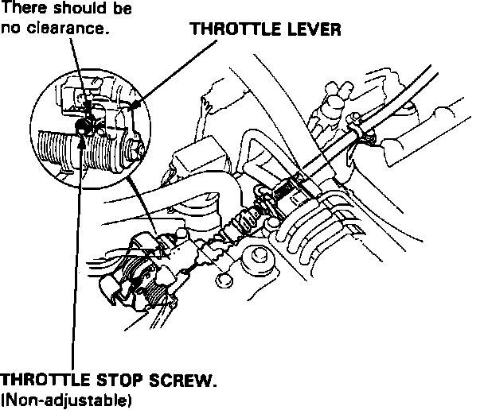

Throttle Body: Adjustments
Throttle Stop Screw:

There should be NO clearance between the throttle stop screw and the stop tab. If clearance exists, replace the throttle body. The throttle stop screw is adjusted at the factory and should NOT be adjusted.